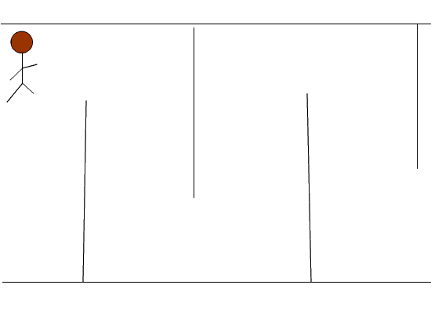

2015-2016 第二学期八年级Flash动画教学设计
作者：TeliuTe 来源：基础教程网
十、 返回目录 下一课
（一）教学设计
1、学习目标：
2、注意事项：绕过弯来，既不要跳也不要落，一楼过了二楼
3、教学过程：
1）教师准备学案和板书；
2）学生整队进入，开机抄黑板上笔记；
3）教师讲解板书演示操作；
4）学生打指法、日志、完成操作；
5）教师打勾记录学生指法成绩，检查日志和操作；
注：学生抄完笔记就开始打指法、日志，老师讲完后再继续完成；
操作图示：

（二）板书设计（课堂笔记）、课后记
41.10学会引导线动画
1.插入，新建元件，影片元件
2.返回场景，画迷宫，40帧
3.添加图层，小人补间动画
4.插入引导层，对齐圆心
第10课 学会引导线动画
1.点插入，新建影片元件，小人
2.返回场景，画迷宫，40帧关键帧
3.插入图层，拖入小人，40，关键帧，补间
4.添加引导层，铅笔，平滑曲线
5.对齐圆心，保存，发布设置，上传
--
2016年04月26日 星期二 10:50
--
有三层，什么时候插入关键帧有点疑问
想想还是先插关键帧，拿不准都插关键帧就是了
--
一般来说动态的用关键帧，用来确定对象的位置
如果位置不变就没必要用关键帧，插入帧只是延长一下
--
范例里面把小人，迷宫都标出来
不算太难，男生做得快
--
分层，各个操作的知识点弄清楚
补间动画的操作还是不理解
--
铅笔工具别乱点，检查一下平滑
不要挤到一层里，4班许多都挤到一个图层里做
--
看了一下4班最后一节，有些急躁了
提前想到会有问题学生，早早的把办法想出来
--
不抄笔记，不动脑筋，想着以前的已经忘记了
乱的问题先解决掉，然后再解决学习上出现的问题
--
4班这样的，可以分成两部分来讲解
先做到迷宫，然后把小人动画和引导线讲一下
--
一下讲完了前面讲着后面又忘记了
这个班的习惯不好，跟着差的偷懒多些
--
返回目录 下一课
本教程由86团学校TeliuTe制作|著作权所有
基础教程网：http://teliute.org/
美丽的校园……
转载和引用本站内容，请保留作者和本站链接。